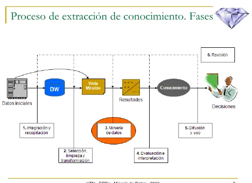

Final
Lo que pedían los finales de 2014 a 2016, los únicos del Drive, y dónde estudiar cada tema.
Resumen no juzgado. Todavía nadie evaluó si alcanza para estudiar solo con esto.
Lo marcado «Plan viejo» es de 2022 o antes, del plan anterior. Puede no coincidir con lo que se toma hoy.
No hay ningún final de 2023 en adelante
Todo lo de esta página son relatos de alumnos, de mesas de 2014 a 2016, cuando la materia se llamaba Minería de Datos. No sé cómo es el final hoy. Si tenés que rendirlo, preguntá en tu comisión. Mientras tanto, estudiá la página del parcial, que tiene toda la teoría.
Qué pedían
Son relatos de varias mesas, en un solo archivo. Contarlas con precisión no se puede, porque uno dice «otras mesas» y otros repiten fecha. Las consignas se repiten así:
| Tema | Mesas que lo nombran | Dónde estudiarlo |
|---|---|---|
| Proceso KDD, gráfico de las fases | 27/10/2016, 11/02/2016, 30/11/2015, mayo 2014, 22/09/2014, y otra mesa sin fecha | El proceso KDD |
| Análisis discriminante, interpretación geométrica y supuestos | 27/10/2016, 11/02/2016, 30/11/2015 | Interpretación geométrica |
| Cluster | 27/10/2016, 22/09/2014 | Análisis de conglomerados |
| Árboles, algoritmo, poda y sobreentrenamiento | 27/10/2016, 22/09/2014 | Árboles de decisión |
| Plantear un problema, la vista minable y una técnica | 30/11/2015, 22/09/2014, y otra mesa sin fecha | Abajo |
| Regresión lineal y puntos influyentes | Mayo 2014 | Abajo |
«Desarrollar el gráfico completo y luego comentar alguna de las etapas». En una mesa pidieron solo el diagrama. En otra, explicar la 6ta fase, Revisión.
El gráfico de las fases
Tenés que poder dibujarlo de memoria.

Fuente: diapositivas de Árboles de Decisión, lámina 2.
Explicar la 6ta fase del proceso KDD, RevisiónFinal 22/09/2014 Plan viejo
Aun cuando el modelo funcione bien, hay que comprobar continuamente sus prestaciones, porque los patrones pueden cambiar. Por eso, el modelo se monitoriza. De tiempo en tiempo se reevalúa, se reentrena y, posiblemente, se reconstruye por completo. Fuente: Introducción a la Minería de Datos, págs. 39 y 40. La fase figura en la lámina 2 de las diapositivas de Árboles de Decisión.
Plantear un problema de minería
«Plantear un ejemplo de problemática a resolver con minería de datos. Indicar con qué técnica se podría resolver y hacer un ejemplo de vista minable de ese problema.» El caso lo elegís vos.
Para armarlo, seguí la cadena que propone el resumen de 2014 (pág. 6):
- El objetivo de negocio. Por ejemplo, «Reducir cola».
- El objetivo refinado. «Asignar recursos más ajustados en cajas según la afluencia de clientes».
- El objetivo de minería. «Predecir con antelación la afluencia de clientes de una tienda en cualquier tramo del día».
- La vista minable. Las filas son la unidad de análisis y las columnas, sus atributos (pág. 11).
- La técnica, según la tarea. Mirá la tabla de tareas y técnicas.
Árboles: lo que preguntaron
«Explicar algoritmo de construcción de un árbol. Explicarle qué era la poda. Qué árbol sobreentrenado.» Las tres están en El algoritmo, Poda y Sobreajuste.
Los relatos dicen «sobreentrenado» y las diapositivas, «sobreajuste». Los apuntes de clase llaman sobreentrenado al árbol que funciona muy bien con los datos de entrenamiento y falla con los de prueba.
Regresión lineal
Solo en el plan viejo
Sale de apuntes de alumnos
Salió en una sola mesa, la de mayo de 2014. No está en ningún examen nuevo. Lo poco que dicen los apuntes de clase de un alumno:
- El modelo es . Si la pendiente es 0, no explica a y no hay modelo.
- Primero se estima el modelo, después se calculan los residuos y con ellos se validan los supuestos. En el análisis discriminante, en cambio, los supuestos se prueban sin estimar antes.
- Para ver si hay modelo se trabaja con variabilidad total, explicada y no explicada.
Apuntes de clase de un alumno
La mesa también pidió definir puntos influyentes. No lo desarrollo acá. El capítulo 7 de Introducción a la Minería de Datos trata el modelo de regresión.
Lo que trajo la promoción de 2018
Gráfico del proceso KDD. Una tabla de tareas y técnicas con cuatro preguntas (qué es una tarea, qué es una técnica, si hay un algoritmo por técnica y si una tarea se resuelve con una sola técnica). Describir selección y preprocesamiento. Cómo se evalúa una clasificación. Cómo comparar árboles con KNN.
Es un relato, y quien lo cuenta aclara que no recuerda bien una de las preguntas. Lo pongo porque muestra el estilo de preguntas de definición. Todos esos temas están en la página del parcial.
Quiz del final
Elegí una opción para ver la explicación. Las que dicen «Se tomó» salieron de exámenes reales.
- 1
¿En qué fase se aplican los algoritmos y se obtienen los modelos?
La minería de datos es la fase 3. La fase 2 prepara la vista minable y la 4 comprueba si el modelo sirve.
- 2
En una vista minable, ¿qué representa cada fila?
Cada fila es una unidad de análisis u observación. Cada columna es un atributo.
- 3
¿Para qué se usa la razón de ganancia en lugar de la ganancia?
Un identificador tiene ganancia máxima y no sirve. La razón de ganancia divide por la información de la partición.
- 4
¿Qué significa podar un árbol?
Se tomó: Final 22/09/2014, adaptada Plan viejo
Se reemplaza el subárbol si el error estimado no empeora. En la lámina, la rama de Viento pasa a ser la hoja «Sí».
- 5
¿Cuál de estos NO es un supuesto de la función lineal discriminante?
Se tomó: Final 11/02/2016, adaptada Plan viejo
Se pide lo contrario, no multicolinealidad.
- 6
¿Qué permite un método no jerárquico que un jerárquico no permite?
En los jerárquicos, lo que se unió en un paso no se separa después. A cambio, en los no jerárquicos hay que fijar antes el número de grupos.
- 7
¿De qué se ocupa la fase de Revisión?
Se tomó: Final 22/09/2014, adaptada Plan viejo
Los patrones pueden cambiar. El modelo se monitoriza y, de tiempo en tiempo, se reevalúa y se reentrena.
- 8
En la interpretación geométrica, ¿cuándo se clasifica en ?
Se tomó: Final 27/10/2016, adaptada Plan viejo
Se clasifica en si .
Todavía no respondiste ninguna.